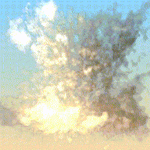
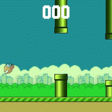
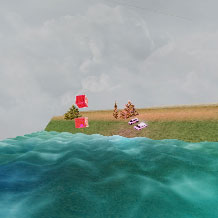
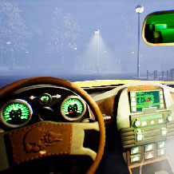
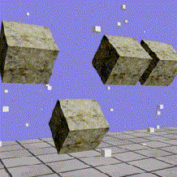
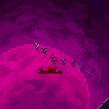

Volumetric Rendering

- C++
- Vulkan
- Nsight
This project formed the basis of my final year dissertation "Implementing and Comparing Real-Time Volumetric and Billboarded Clouds". I implemented volumetric cloud rendering and instanced billboarded cloud rendering as part of the project. This page will focus on the volumetric implementation.
Shrimp Fried Engine

- C++
- D3D11
- PS4
This project was completed as part of the Cross-Platform Engine Development module at Staffs Uni and involved working with a team of 8 others to create a 2D game engine that has parity on at least 2 platforms. For this project, I was solely responsible anything graphics related which mostly manifested in the creation of a graphics abstraction layer as well as additional features that make use of said API. Featuring animation and text rendering
D3D11 Projects

- C++
- HLSL
- D3D11
This project was completed as part of the 'Advanced Real-Time Rendering module' at the University of Staffordshire. The primary goal of this project was to implement deferred lighting as well as PBR, normal mapping and a variety of post-processing effects including depth of field, sharpness, chromatic abberation and other colourspace effects.
This project involved creating a basic rendering pipeline using D3D11 and was completed as part of Staffordshire University's 'Real Time Rendering' module. The pipeline features bloom, water shading using Gerstner waves, transparency, terrain generation, fog, model and texture loading and more.
Midnight Taxi

- Blueprint
- UE5
- Collab
Midnight Taxi is a narrative focussed horror/thriller game about being a taxi driver in a suburban town in the Deep South. The game was created in UE5 and I worked on the junior tech team alongside 2 other juniors and 3 seniors. We worked in Blueprint and my main tasks were creating a working SatNav system, creating multiple materials, handling save data, creating the options menu and faking physics on an actor to be more performant.
Bare-Metal PS1

- C
- PS1
- MIPS
This project focussed on creating OBB Collision on the PS1 without the use of a library in C. The goal of the project was to effectively port a physics and collision project I had completed in my second year of uni. The previous project can be found here.
Custom Physics Engine

- C++
- D3D11
This project involved creating a basic physics engine from scratch in D3D11 using DirectXMath. It features basic collision detection and response between sphere, AABB and OBB colliders, a particle system, springs and a rigid body physics model. The project ultimately demonstrates the basics of rigid body and point mass physics.
Low Level Optimisation

- C++
- PS4
- ImGUI
This project focussed on low-level optimisation in C++. I implemented a custom memory manager, memory pools and multithreading via a quadtree. The project was also ported to PS4 where the same multihreaded functionality was recreated.
Heaven's Blade

- C#
- PHP
- Unity
- MySQL
Heaven's Blade is a 2D platformer prototype with a focus on speed and movement that I made for uni over the course of six weeks. The prototype includes an online leaderboard and many features to create an interesting character controller. The online leaderboard was built using PHP and MySQL which took up the majority of development time.